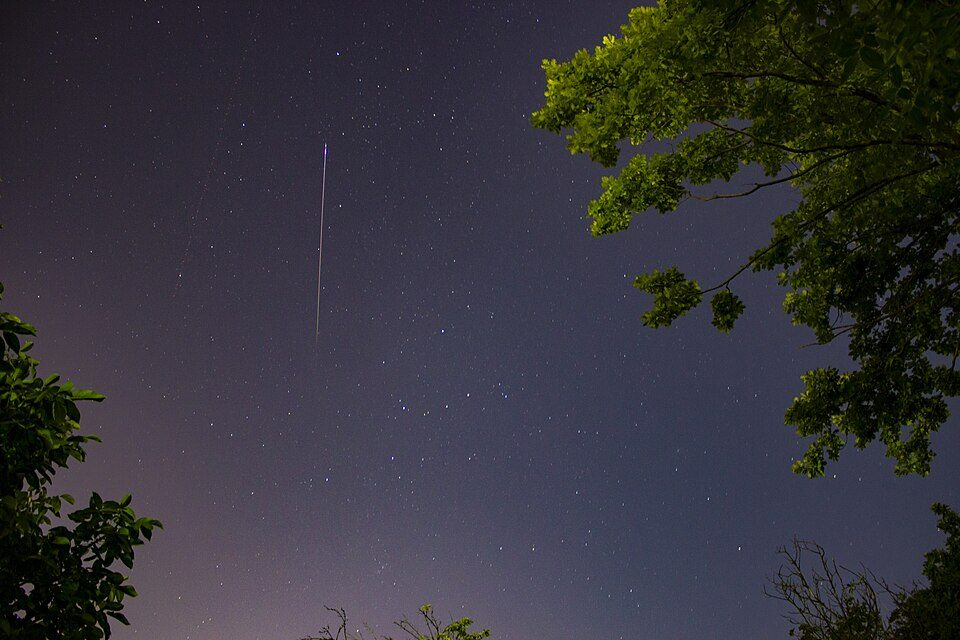
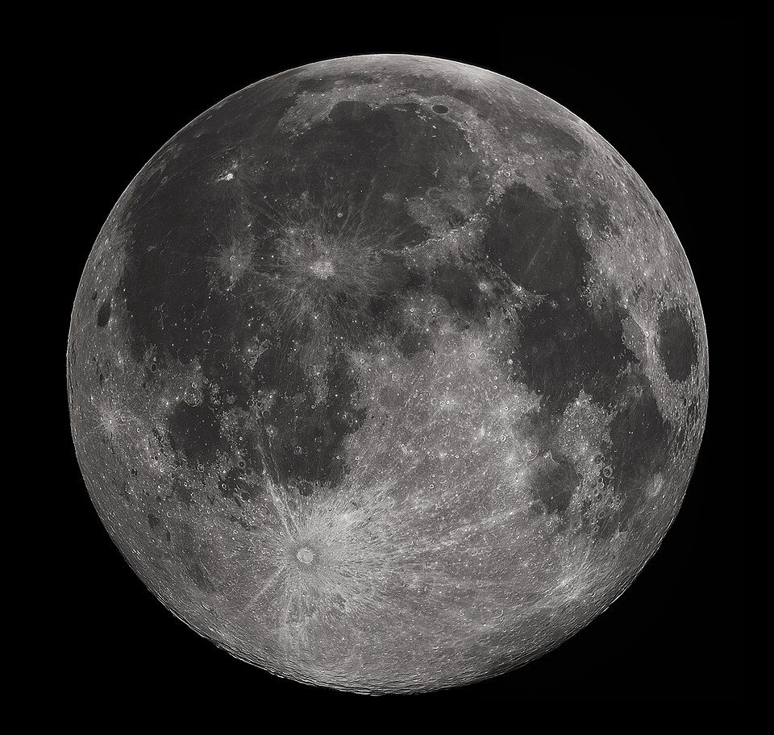

Universe · 6 articles
Stargazing
A practical guide to looking at the sky with the naked eye, binoculars or a telescope: constellations, eclipses, meteor showers and the calendar for the coming months.
You need no equipment to start: just go out at night, let your eyes adjust to the dark and know where to look. This section gathers the essentials for enjoying the sky from anywhere, with special attention to what can be seen from Spain.
- How to start stargazingPractical tips for your first night under the stars: where to go, when to go out, what to take and what to look for.
 The constellationsThe sky's 88 official figures, their legends and how to find the easiest: Orion, the Great Bear, Cassiopeia and the Summer Triangle.
The constellationsThe sky's 88 official figures, their legends and how to find the easiest: Orion, the Great Bear, Cassiopeia and the Summer Triangle. EclipsesWhy they happen, how to watch them safely and Spain's great eclipses: August 2026 and August 2027.
EclipsesWhy they happen, how to watch them safely and Spain's great eclipses: August 2026 and August 2027.
Meteor showersPerseids, Geminids, Quadrantids and more: what shooting stars are, when to see them and how to make the most of them. Binoculars and telescopesWhat to buy to get started, what you can see with each instrument and the most common mistakes when choosing a telescope.
Binoculars and telescopesWhat to buy to get started, what you can see with each instrument and the most common mistakes when choosing a telescope.
Astronomy calendar 2026–2028The sky's upcoming events as seen from Spain: meteor showers, eclipses, planets and seasons.